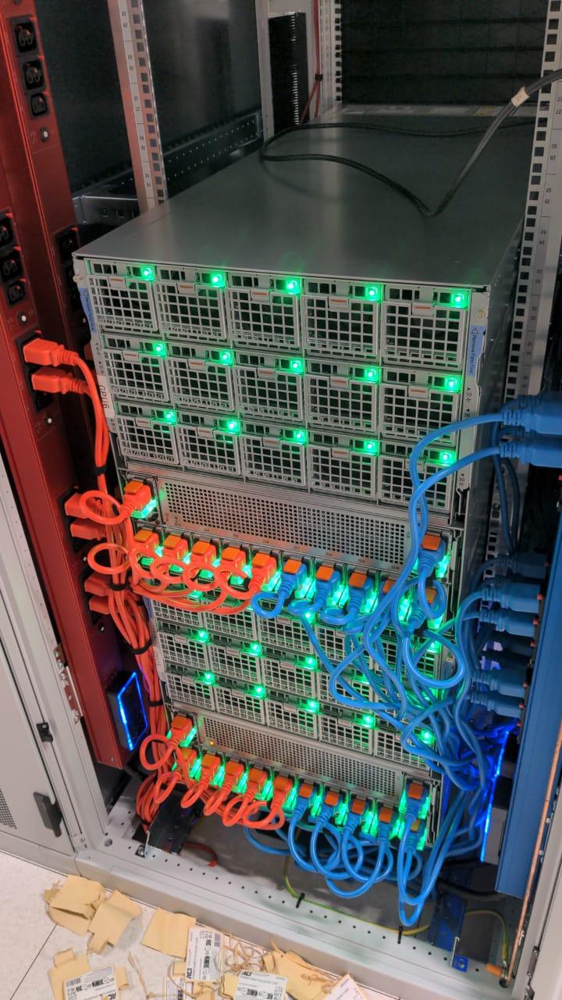
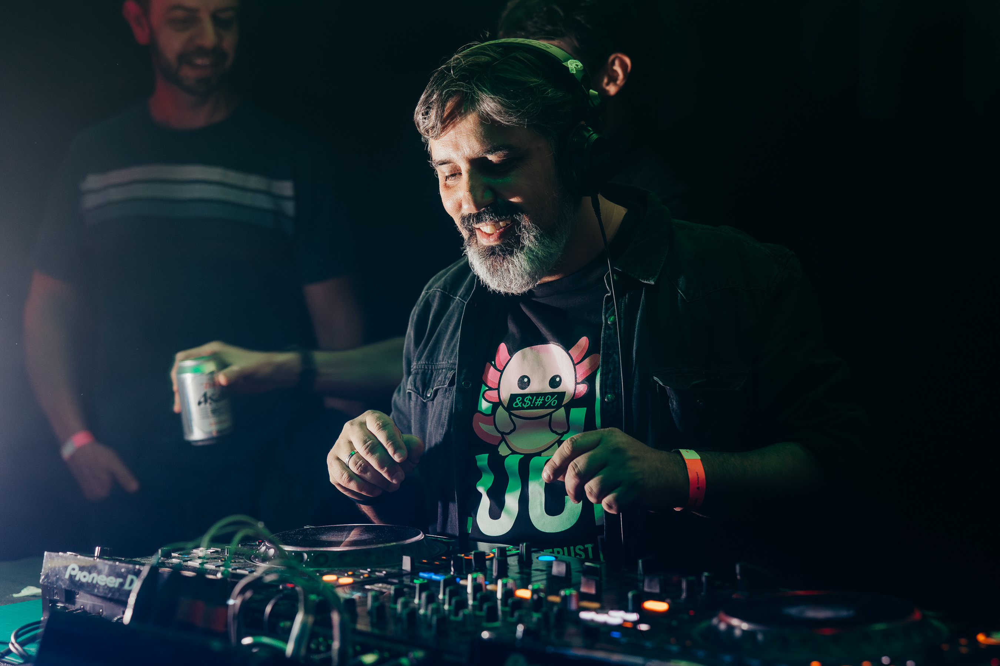

AI Tech Summit „Filip Avramchev“ · Human × AI · Skopje 2026
Beyond the Clouds
Sovereign AI infrastructure to regain control and autonomy — and what the argument looks like from Skopje.
Timing target: about 25 minutes of content, then lunch at 12:15. Thirty-minute slot, hard stop — the room is hungry. Main stage, day two, 11:45, billed as a keynote. This is the first slide, up as the chair introduces you. You come on straight from the twenty-minute panel with Koen van den Berg (NVIDIA) and Slobodan Đinović (Orion Telekom), so do not re-introduce yourself at length: one line, then the argument.
"I build AI infrastructure for a living. For the next twenty minutes I want to argue that the most important AI decision you'll make this year isn't which model — it's whose jurisdiction you run it in. And then I want to show you what that looks like from here, not from Amsterdam."
Set the contract in one breath: "Twenty minutes, then lunch. There's a slide at the end with five things I believe and you might not — argue with me in the foyer." Say the actual clock time for lunch out loud; it buys goodwill and it stops you overrunning.
Đinović has his own #Sovereign AI keynote at 14:15 — a telecom operator's view of the same question. Worth one sentence of hand-off at the close if he is in the room.
Could you move your AI workloads to another provider in ninety days?
Show of hands — then keep them up if you've tested it
Do the show of hands. Wait for it. Roughly a third go up on the first question; almost none stay up on the second. That gap is the talk. This is a summit room — students, founders, executives, a few engineers — so most hands belong to people who buy AI rather than run it. That makes the second question land harder, not softer.
"Right. So most of us believe we could. Almost none of us have proved it. In every other part of the business we'd call that an untested disaster recovery plan."
Before I show you any evidence
I quit a big American hyperscaler to go and build Europe's own.
- Where I stoodYears inside one of the big American hyperscalers, on the side of the argument I am about to take apart. It works. It is genuinely good. That is exactly what makes this hard.
- Where I stand nowBuilding sovereign AI gigafactories in Europe: grid connections, halls, GPUs, and the software layers above them. Built here, run here, by people who live here.
- Why say it nowBecause I am not neutral, and you deserve to know that before the evidence rather than in the small print at the end.
I did not change my mind about the technology. I changed my mind about who should be holding it.
Thirty-five seconds, and resist every temptation to make it longer. This is not a bio — the bio is on the last slide with your face on it. This slide does three jobs and then gets out of the way: it says you have stood on both sides, it puts your affiliation at the front of the talk instead of halfway through, and it makes the next slide personal rather than academic.
The slide names neither company on purpose. It travels to any room, it does not read as a swipe at a former employer, and both names are already on the title byline and in the programme — so the room has them either way. You decide on stage how specific to be.
Without the names: "One thing about me before I show you a single number, because it changes how you should listen to the rest. I spent years inside one of the big American hyperscalers, selling the thing I am about to spend twenty minutes taking apart. Then I left, to go and build sovereign AI gigafactories here instead — because I think this continent should be able to run its own, and because I would rather build that than sell around it."
With them, if the room is right for it: "…I spent years at Microsoft, selling the thing I am about to take apart. And I left, and I came to VOLT, to build AI infrastructure in Europe."
Either way, finish on: "So I am not a neutral analyst and you should not listen to me as if I were. I did not change my mind about the technology. I changed my mind about who should be holding it."
Say the number of years out loud — the slide deliberately does not, so it stays true whenever you give this talk. Do not list titles, products or customers; the moment this becomes a CV it stops working.
The tail line is the hand-off to the thesis on the next slide. It is the same argument in personal form: the technology is not the problem, the jurisdiction is. Land it, pause, advance.
Because your affiliation now lands here, the cues on the megawatt slide and the § 04 divider have been softened. The naming is done by the byline on slide 1 and by the programme, so this slide only has to establish the conflict, not spell it out. If you skip this slide, put the full disclosure back in § 04.
"Just use the API" was never an architecture decision. It was a procurement decision that quietly outsourced your jurisdiction.
The thesis of this talkNext door, just nowSovereign by Design: three blueprints for AI that can't leave the building — Gjorgji Dimitrov, AI Labs, 11:25. Managed API, private endpoints, self-hosted weights: three good architectures. This talk adds the question that picks between them — which court can compel this?
Say the cross-reference first, in one breath, then the slide. The AI Labs session that just finished next door covered three sovereign architectures for the same problem; some of that room is walking into this one. Crediting it costs three seconds and converts a competing session into your warm-up act.
"If you were next door just now, you saw three blueprints. They are all good. I want to add the question that picks between them — and it is not a technical question."
Land the slide slowly. The word that does the work is jurisdiction — not "data", not "privacy". Leaders in this room already own jurisdiction risk in every other supplier contract.
"Nobody signed off on a foreign-policy exposure. Somebody signed off on a credit card and a rate limit. Those turned out to be the same decision."
The ground moved
Four things changed between your last AI budget cycle and this one. None of them were announced by your vendor.
Section is ~6 min now that the three regulation slides sit inside it. Purpose: establish that this is not a philosophical debate about sovereignty, it's a live risk register update. Facts only, no advocacy yet. This room is not in the EU, so the payload of the section is slide 9, and the three regulation slides after it name the rules one at a time.
Start with where you actually are
European cloud providers' share of their own home market, against everyone else's. The market grew sixfold. Their share of it halved.
The plateau is the uncomfortable part. Three years of sovereignty debate, a €74bn market growing 24% a year, and the European share has not moved off 15%. Rhetoric did not shift a single point of it.
Synergy Research Group, July 2025 · European cloud infrastructure services, share of the European market
Forty-five seconds. This is the baseline the whole talk sits on, and it is the slide that makes the room uncomfortable in the right way. Do not editorialise — the two numbers do it.
"Before anything else, here is where we are. In 2017 European providers had twenty-nine percent of their own market. Today it's fifteen, and it has been fifteen for three years. The market grew sixfold in that time — the share halved."
The plateau matters more than the decline. Anyone can dismiss a decline as the past. A plateau through the loudest three years of sovereignty rhetoric in European history says the talking is not working, which sets up the "procurement, not manifestos" line later.
If challenged on the definition: this is Synergy's cloud infrastructure services measure, European providers' share of the European market. The complement is not all US — but it is overwhelmingly US: Amazon, Microsoft and Google alone are about 70%, and the largest European provider is 2%. Say that as one sentence; there is no separate slide for it in this cut.
Two survey numbers to say off this slide, not to show: 93% of enterprises are repatriating, mid-repatriation or evaluating it (Cloudian, March 2026), and public cloud as the primary inference environment fell from 56% to 41% in one year (Broadcom, 2026). "Whatever you think of sovereignty as a principle, the market has already voted — with procurement forms, not manifestos." Concede survey bias at once if challenged.
The local line, also off this slide: none of the big three has a region in the Western Balkans. Every prompt sent from this building crosses a border before it reaches a GPU.
We cannot guarantee that French citizens' data will not be handed to US authorities without their consent."Anton Carniaux, Director of Public & Legal Affairs, Microsoft France — under oath, French Senate inquiry into digital sovereignty, 21 July 2025. Microsoft's technical director added that a contractual guarantee keeps EU customer data in the EU. A contract is not a jurisdiction.
The single most useful slide in the deck for this audience. It is not an activist claim — it's sworn testimony from the vendor most of this room already buys from.
Be scrupulously fair: he also said it had never actually happened, and Microsoft has since strengthened its EU Data Boundary. The point is not that Microsoft is untrustworthy. The point is structural: no US-parented company can contract its way out of the CLOUD Act.
"This is the vendor's own lawyer, under oath. Nobody is accusing anyone of anything. He's describing the structure of the problem more honestly than most of us do in our own risk registers."
Four dates that changed the calculus
- 21 JUL 2025Microsoft France testifies
Cannot guarantee EU data is beyond US reach. Contractual, not jurisdictional.
- 15 JAN 2026AWS European Sovereign Cloud goes live
€7.8bn, Brandenburg, EU-incorporated parent, EU-resident operators. The hyperscalers concede the premise.
- 29 JUN 2026Trump v. Slaughter
US Supreme Court removes for-cause protection for FTC commissioners — the independence the adequacy decision relied on.
- 31 JUL 2026EDPB writes to the Commission
Asks it to assess whether the FTC can still uphold Data Privacy Framework commitments. A review, not a revocation — yet.
Walk it left to right in about 90 seconds. The arc: the vendor admitted it → the vendors responded to it → the legal ground under the response moved anyway.
On AWS: this is genuinely a serious offer, and note what it concedes. €7.8bn is not a marketing budget. If sovereignty were a fringe European anxiety, they would not have built a separate legal entity for it.
On Slaughter/EDPB: the General Court upheld the Data Privacy Framework in September 2025 (the Latombe case). Transfers are lawful today. But the adequacy decision explicitly leaned on FTC independence, and that premise is now contested. Schrems III is a question of when, not whether.
"Three times in ten years, the legal basis for transatlantic data transfer has been struck down. If your AI architecture assumes it survives a fourth challenge, that's a bet, not a plan."
You are not in the EU. Most of its rulebook binds you anyway.
A candidate, not a member. But the market Macedonian software is sold into is the single market — and its AI rules follow the customer, not the flag.
- The AI Act reaches across the borderArticle 2: anyone placing an AI system on the EU market, and providers and deployers anywhere whose output is used inside the EU. Where you run it does not matter.
- Personal data already mirrors GDPRThe 2020 Law on Personal Data Protection is a GDPR transposition, transfer chapter included. The sovereignty clause is already national law.
- Your exit rights come with the invoiceThe Data Act binds every EU cloud provider you buy from: from 12 January 2027 they may not charge you to leave. Buy European and you inherit the exit clause.
- The rest is on the accession pathSMART/MK 2030 makes AI a priority; the Council of Europe AI Convention was signed on 8 May 2026; the AI Act and the three that follow are acquis you align with before you join.
The practical reading: a Macedonian company serving EU customers has the same deadline as a Dutch one — and, until accession, less say over the rules. An argument for owning the architecture, not for waiting.
Ninety seconds. This is the slide that earns the talk its place in Skopje — without it, the previous four slides are somebody else's problem. Read the first and third points; the other two are for the photograph.
"You might be thinking: none of this binds me, we're not in the EU. Two answers. First, the AI Act doesn't care where you are — it cares where your customer is, and for most of the software built in this country the customer is in the EU. Second, the one law in this list that helps you, the Data Act, helps you through your supplier: buy from a European provider and from January they cannot charge you to leave. You inherit the protections and the obligations of a market you don't yet vote in. That's an argument for owning the architecture, not for waiting."
If challenged on Article 2: the extraterritorial reach is 2(1)(a) for providers placing systems on the EU market and 2(1)(c) for third-country providers and deployers whose output is used in the Union. Say it once, do not litigate it.
If challenged on the 2020 data law: yes, it is a GDPR mirror rather than GDPR itself, and yes, the amendment easing transfers to NATO countries shows the mirror can bend. That is the point — a rule you inherit can be bent by others; an architecture you own cannot.
Do not turn this into an accession lecture. The room has opinions about Brussels that are not yours to fix in ninety seconds. The only claim you need is: the rulebook already reaches you; the vote does not — yet.
Regulation (EU) 2022/2554 · in force since 17 January 2025
Digital Operational Resilience Act
Everyone shortens it to DORA. It takes the question this talk is built on and makes it auditable for every bank, insurer and investment firm in the Union.
- Who it bindsTwenty-one categories of EU financial entity — and, through them, every technology supplier those entities depend on.
- What it asksRegister your critical technology providers, and keep a documented, tested exit plan for every service supporting a critical function. Not a clause. A rehearsal.
- The sovereignty clause nobody quotesA provider designated critical and based outside the Union must establish a subsidiary inside it within twelve months. Nineteen were designated in November 2025.
Reaches you hereSell software to an EU bank and you are a technology third party. Their exit obligation arrives in your contract, and "we have never tested it" is now an audit finding rather than an awkward answer.
Forty seconds. Do not read the slide. Say the name in full once — most of the room has only ever seen the acronym — then deliver the second point and the reach line. The icon does the rest.
"The Digital Operational Resilience Act. It has applied to every bank and insurer in Europe since January last year, and it contains the single most useful sentence in European law for this argument: if a service supports a critical function, you need a documented, tested exit plan. Not a clause in a contract. A rehearsal. Somebody in a European bank has to actually prove they could leave."
The third point is the one that surprises people and it is worth the extra ten seconds: a critical provider headquartered outside the EU has to open a subsidiary inside it. That is sovereignty written into financial regulation, and it was written before anyone in Brussels started using the word.
If someone from a bank challenges you on detail: the exit requirement is Article 28(8); the designation list came from the three European supervisory authorities on 18 November 2025. Say it once and move on — you are not the DORA expert in that room and you do not need to be.
Cut this slide first of the three if you are behind. The CRA slide is the one this room cannot afford to miss.
Directive (EU) 2022/2555 · national law across the Union since October 2024
Network and Information Security Directive 2
The second version of Europe's baseline security law, and everyone shortens it to NIS2. What changed in version two is not the controls. It is who is personally answerable for them.
- Who it bindsEssential and important entities across eighteen sectors: energy, transport, health, water, banking, public administration, digital infrastructure and managed service providers.
- What it asksOwn the security of your supply chain, not only your own perimeter. Management bodies approve the measures, and can be held personally liable for failing to.
- Why it behaves differentlyIt is a directive, not a regulation, so each of the twenty-seven transposed it into its own national law. The duty is common; the detail is not.
Reaches you hereYour European customer cannot delegate this duty away, so they will push it down to you in writing. Expect the security questionnaire long before you expect the law.
Thirty seconds, and the second point is the whole slide. This room contains people who sell to European utilities, hospitals and banks. They have all filled in the questionnaire; most of them do not know which law produced it.
"Network and Information Security, version two. The controls are not the interesting part. The interesting part is that a board has to approve them and can be held personally liable — so the duty cannot be delegated to a supplier. Which means it lands on you instead, as a questionnaire. If you have been wondering why your German customer suddenly wants to know who maintains your dependencies, this is why."
The directive-versus-regulation point matters for anyone planning to comply once and sell everywhere: they cannot. Twenty-seven transpositions, twenty-seven sets of detail. It is also the honest reason this slide is thinner than the other two.
Cut second of the three.
Regulation (EU) 2024/2847 · reporting live since 11 September 2026
Cyber Resilience Act
Of the three, this is the one that reaches a country of software exporters most directly. It does not care who your customer is. It cares that your product is on the European market.
- Who it bindsAny manufacturer placing a product with digital elements on the EU market. Hardware and software, finished products and components sold separately — wherever the manufacturer sits.
- Live nowReport actively exploited vulnerabilities and severe incidents to ENISA and a national response team, through a single reporting platform. This applies to products already on the market.
- Lands December 2027Security by design, vulnerability handling across the whole support period, a software bill of materials, technical documentation and CE marking.
Reaches you hereNot through a customer's contract. Directly. If you ship software into the Union you are a manufacturer under this regulation, and the reporting clock started before this summit did.
Fifty seconds, and of the three regulation slides this is the one to protect. It is the only European law in the deck that binds a Macedonian company on its own terms rather than through somebody else's contract — and the first obligation went live twelve days ago.
"The Cyber Resilience Act. Read the first point carefully, because it is the one that is actually about this room. It does not bind European companies. It binds anyone who places a product with digital elements on the European market, wherever they are. If you export software to the EU — and this country exports a great deal of it — you are a manufacturer under this regulation. And the reporting obligation did not start in 2027. It started on the eleventh of this month, twelve days ago, for products that are already out there."
Say "twelve days ago" only while it is true — it is the sharpest thing on the slide today and it will need rewording if you give this talk again. The kicker carries the date, so you can simply drop the aside.
The practical ask, if someone wants one: a software bill of materials is the artefact that satisfies the 2027 half, and it is also the first half of the open-source maintenance argument on the closing slide. Generating one is an afternoon; knowing what is in it is the hard part.
Do not attempt the open-source stewardship carve-out from the stage. It exists, it is narrow, and it will eat five minutes you do not have.
Sovereignty is a dial, not a switch
The unproductive version of this debate is "cloud or on-prem". The productive version is "which level, for which workload, at what price".
Section ~5 min. This is the reframe that makes the rest of the talk actionable, and it's the part most likely to change what someone does on Monday.
The scale itself: SEAL 0 to 4
Sovereignty Effective Assurance Levels. Five rungs, scored across eight dimensions — legal, operational, supply chain, technological openness, security, environmental — and totalled into one comparable sovereignty score. They do not say a provider is good or bad. They say how much of your control is contractual and how much is structural.
April 2026 · €180m awarded to Post Telecom, STACKIT, Scaleway and Proximus — most at SEAL-3, Proximus at SEAL-2. No hyperscaler bid at SEAL-3.
Ninety seconds, one rung per click. Do not read all five — read 0, 2 and 3, and let them see the bars grow. The whole slide exists so that "how sovereign are you?" becomes a number a supplier has to write down.
"Stop arguing about whether you're sovereign. There's a five-point scale, the Commission scores suppliers against it across eight dimensions, and it just spent a hundred and eighty million euros using it. Pick a number per workload, write it into the requirement, and make suppliers answer it. That's a procurement problem, and you already know how to run those."
The gap between 2 and 3 is the whole talk. SEAL-2 is what a contract can buy you — it fails the moment a foreign court instructs the parent company. SEAL-3 is what an architecture buys you. That is the same distinction as the Microsoft testimony on slide 7, expressed as a procurement level.
If someone challenges SEAL-4 as unachievable: agree immediately, without hedging. Nothing operates there at scale, and that is precisely why the EU is funding gigafactories. Conceding it costs you nothing and buys you the rest of the argument.
Worth saying out loud: no hyperscaler bid at SEAL-3. They bid, and they landed lower. That is not an accusation, it is the structure of the thing.
For this room: SEAL is an EU procurement instrument, but nothing stops a Macedonian ministry, bank or hospital writing "SEAL-3 or a written explanation of why not" into a tender tomorrow. The framework is public. Use it before you are obliged to.
Four questions, asked per workload — not per company
- JurisdictionWhich court can compel this data, and who is legally capable of refusing? Not "where is the region".
- PortabilityIf the price triples or the model is deprecated on Friday, what is the actual cost of leaving? Measure it in weeks.
- EconomicsAt your real utilisation, not your peak slide — where does the crossover sit?
- CapabilityIf this becomes core to the business, do you want to be able to build it, or only to buy it?
The load-bearing word is per workload. Your marketing copy generator and your claims-adjudication model do not deserve the same answer, and a company-wide "AI policy" that gives them the same answer is how you end up over-paying and under-protected simultaneously.
"Most organisations have one AI policy and forty AI workloads. That's the mistake. Sovereignty is a per-workload property, like data classification — and you already classify data."
What actually changes when you own the control plane
- Capability arrives in days
- Cost scales with success, forever
- Model deprecated on the vendor's schedule
- Audit trail is whatever the vendor exports
- Terms of service change without your consent
- Zero infrastructure headcount
- Capability arrives in weeks, once
- Cost is a fixed floor plus marginal compute
- You choose when a model retires
- Every prompt, retrieval and response is yours to log
- Terms change when you change them
- Real platform engineering, hired and retained
Do not let the right column look free. Read the last line of each column aloud, deliberately. That is the honest trade and the room will trust everything after it more.
"The right-hand column is not better. It's different, and it's yours. Anyone who tells you the right column has no cost is selling you the right column."
Three decisions, one country, one summer
Between May and July 2026 North Macedonia answered the sovereignty question three times without calling it that. Read them against the dial: each one lands on a different number.
24 June 2026 · federate
Vezilka, the AI Factory Antenna
FINKI · Ministry of Digital Transformation · ≈ €6m
- Plugs Macedonian researchers, start-ups and companies into Pharos in Athens: 2,000+ GH200 superchips, 89 petaflops
- Rents European compute; keeps the data, the models and the skills here
- First priority: Macedonian language and culture; then health, energy, public administration, agriculture
2025 → 2026 · build
A Macedonian model you can audit
domestic-yak 8B · weights, corpus and code all open
- 40 GB of Macedonian text, 3.5 billion words, 106k culturally grounded instructions
- Beats every 8B model on Macedonian benchmarks; native speakers preferred it over larger ones
- Tier 3 on the openness slide — the tier you can put in front of a regulator alone
May – June 2026 · host
The data-centre amendments
Law on Urban Planning · Law on Construction · "hundreds of millions"
- The state pre-prepares sites and permits so large foreign data centres can be built fast
- Investors, ownership and what runs inside: to be disclosed when negotiations are concrete. Grid and water impact: not yet published
- Necessary — the bottom layer has to be poured somewhere — but hosting the servers is real estate, not sovereignty
Two make the country more sovereign. The third makes it a landlord — unless the layers above the concrete are owned here too.
Two minutes, and this is the slide the talk was rebuilt for. Everything before it was Europe's problem; this is Skopje's. The Vezilka card is also your answer to "isn't sovereignty just protectionism?": an antenna is staying in the European commons and keeping a vote, not building a national copy. Walk left to right, and be scrupulously fair to the third card — you work for a data-centre company, and the room knows it.
"Three things happened here this summer. In June the Ministry and FINKI switched on Vezilka: six million euros, and it plugs this country into the Greek AI Factory — two thousand of the best chips in Europe, in Athens, without building any of them. That is 'stay in the commons and keep a vote', as a project. Second, a group of researchers released domestic-yak: an eight-billion-parameter Macedonian model where you can read the weights, the training data and the code. That is the only kind of 'open' that survives an auditor. And third, in May and June the government moved to change the planning and construction laws so large data centres can be built quickly, for investors it hasn't named yet."
"I build data centres for a living, so hear this carefully: the third one is necessary. Somebody has to pour the bottom layer. But a hall full of somebody else's GPUs, running somebody else's software, for somebody else's customers, is an electricity export with a nice roof. The same hall with a Macedonian-run control plane on top is an AI industry. The law decides the hall. What this room does decides the rest."
Facts to have ready: Vezilka launched 24 June 2026, coordinated by FINKI with the Ministry of Digital Transformation, ≈€6m from Horizon Europe, EuroHPC JU, the ministry and FINKI; one of four Pharos antennas with Cyprus, Malta and Serbia, approved 15 October 2025. domestic-yak: Krsteski, Tashkovska, Sazdov, Gjoreski, Gerazov, SlavNLP at ACL 2025, weights on Hugging Face under LVSTCK. The amendments were announced by Deputy PM Nikoloski on 23 May and defended by PM Mickoski on 14 June; the critics' word is "digital extractivism", and you should not use it from the stage.
If someone from the ministry is in the room — likely — the line to offer is constructive: write "who operates the control plane" into the data-centre law, the way the Commission wrote SEAL into procurement. That is the ninety-day plan, move four, for a government.
The stack is ready — that's the news
Three years ago this argument failed on engineering grounds. It doesn't any more, and that's the part the room probably hasn't been told.
Section ~5 min. Energy shift: sections 1–2 were risk, this is opportunity. Change your voice here. This cut keeps the map and the request path from the Groningen deck and drops the YAML: the room should leave knowing the two layers to own, not the field names.
AI infrastructure became boring. Boring is the achievement.
- 66%of organisations serving generative AI models already run inference on Kubernetes. This is the mainstream, not the fringe.
- 31 certified platformsunder the CNCF Kubernetes AI Conformance programme as of March 2026 — up from 18 in November 2025.
- Portability is now testableConformance covers disaggregated inference, inference ingress, GPU-aware scheduling. Portable means certified portable.
- The hard parts got donatedllm-d — Red Hat, Google, IBM, NVIDIA, CoreWeave — entered the CNCF in March 2026, v0.9 in August. Prefill/decode disaggregation, KV-cache-aware routing, wide expert parallelism: open, documented, and yours to run.
Translate every term. "Disaggregated inference" = the expensive trick that makes GPUs 2–3× more efficient, which used to be proprietary and now isn't.
"The reason I can stand here and make this argument in 2026, when I couldn't in 2023, is that the difficult engineering has been commoditised — by the people selling the alternative. That is unusual, and it's the window."
If challenged on maturity: llm-d benchmarks around 120k tokens/sec on 16 H100s with Qwen3-32B. Real numbers, open code, reproducible.
"Open weights" is not the same thing as an open model
The substrate is solved. The model layer is not — and the word "open" is doing a great deal of work in vendor marketing right now. There are three tiers, and only one of them survives the sovereignty test.
Tier 1
Closed APIs
GPT-5 · Claude · Gemini
- No inspection, no control, no say in when it is retired
- The vendor holds the pricing power and the terms of service
- Genuinely the best capability available — that is why it is tempting
Tier 2
Open weights
Llama 4 · DeepSeek R1
- You can read and run the weights — a real improvement
- But: licence restrictions, no training-data audit, geopolitical entanglements
- Portable, not accountable. Enough for lock-in, not enough for an AI Act file
Tier 3
Actually open
OpenEuroLLM · Mistral on EU infrastructure · domestic-yak
- Inspectable, forkable, and deployable on infrastructure you control
- The only tier where you can answer an auditor without phoning a vendor
- Behind the frontier today — and closing, which is the whole bet
The question to ask any supplier: is a model "open" if you can read the weights but cannot audit the training data, verify the alignment, or run it without GPU capacity you do not control?
This is the honesty beat inside the good-news section. The previous slide said the stack is ready; this one says the model layer is the part that genuinely is not, and you would rather they heard that from you than from a vendor.
"Everybody in this room has been told they can have an open model. Read the middle card. You can download the weights, you cannot audit what went into them, and the licence still tells you what you may build. That's portable — it isn't accountable."
Ties directly to the workload table later: rent the frontier knowingly, through your own gateway. This slide is why "knowingly" is in that sentence.
If challenged that tier 3 is behind: agree, immediately and without hedging. Then note that tier 3 is the only one you can put in front of a regulator without a vendor on the call.
domestic-yak is on the third card on purpose: an eight-billion-parameter model is nowhere near the frontier, and it is the only model in this talk whose entire training corpus you can download. For Macedonian-language work it is also the best one that exists. Both things are true, and the next section is built on the second.
Every layer open, every layer replaceable
OCI images
Gateway API
OpenAI-compatible API
MCP · A2A
S3 API
Open weights
Every boundary is a standard, so every layer is an exit.
Model registry
Eval harness
Prompt, tool & response lineage
Immutable audit log
The AI Act evidence layer. Build it first, not last.
Eight layers, three new since 2024: the agent gateway, inference routing, fractional GPU scheduling. Next: one request through them.
60 seconds — this is the map for the next two slides, not a slide to read. Translate as you point: "gateway" is the front door that decides who may ask what; "inference routing" is the receptionist that decides which machine answers; "GPU scheduling" is how you share an expensive card between teams. Every italic sub-label on the slide is the plain-language version — read those, not the chips.
"There is nothing exotic here. Every box is open, documented, and someone else's problem to maintain. What's new since I last drew this is the three layers in the middle: an agent gateway that understands MCP, an inference router that understands the KV cache, and a scheduler that hands out fractions of a card. Each of those was a proprietary advantage eighteen months ago."
Point at exactly three things: the two gateway layers (the highest-leverage thing to own), the data layer (the moat nobody should rent), and the bottom layer (the thing you cannot download, which is why the build-out slides follow).
If an engineer asks what I would actually run on one box: K3s, host-installed driver, GPU Operator for the plugin and DCGM, HAMi for sharing, vLLM at TP 4 with FP8 weights and KV, kgateway with agentgateway, an InferencePool over the vLLM pods. The Groningen deck has that as five commands; point them at it rather than saying it to the room.
One request, four hops — and you own the middle two
The layers you actually have to run to be sovereign are the ones where decisions get made about a request: who may call what, and which GPU answers. Both are now open standards with more than one implementation — you are choosing an API, not a vendor.
1 · Caller
Agent or app
OpenAI-compatible client · MCP client · A2A peer
- Talks to one hostname, forever
- Never learns which model, vendor or GPU answered
- That ignorance is the portability
2 · Policy
Agent gateway
agentgateway · Envoy AI Gateway · kgateway
- AuthN/Z on every hop: JWT, OIDC, API key, SPIFFE
- Which tools an agent may call — tool-level RBAC for MCP, guardrails on prompts and tool calls
- Token budgets, redaction, cost per request, OTel by default
→ your own GPUs, by default
→ a frontier API, knowingly
3 · Placement
Inference gateway
Gateway API Inference Extension · EPP via ext-proc
- Sees how busy every GPU is, per request
- Knows which one already holds this conversation's context
- Queues and prioritises when everything is full
how loaded is each card
which card already has my context
4 · Tokens
Model servers
vLLM · SGLang · llm-d well-lit paths
- Open models on GPUs you chose, in a jurisdiction you chose
- Or, through the same door, a rented frontier model
- Reports its load back to hop 3, continuously
a B300 in Skopje · a rack in Athens
a frontier API in Virginia — the caller cannot tell
Two days of agentsMicrosoft's From Applications to Agents, the Beyond Copilots panel, The One-Person AI Company, OpenAI's State of AI this morning — every one of them puts an agent in front of your tools. Hop two is where you decide which tools it may call, and the only place you can prove what it did. Nobody has shown you this box yet.
This is the technical spine of the talk — 90 seconds, and the most technical the deck gets. The leadership version had one "gateway" box; this room can handle two, as long as you say what each one decides in plain words and never name a field.
"Hop two decides whether a request may happen and what it may touch. Hop three decides where it runs. Own those two and it genuinely does not matter whether hop four is a GPU in Skopje, a rack in Athens or a frontier API in Virginia — the caller cannot tell, and neither can the audit log. That is the whole trick: you don't have to leave the cloud to stop being captured by it. You have to own the two boxes in the middle."
Why hop three exists, in one sentence if asked: two identical GPUs are not interchangeable once one of them is already holding your conversation, so an ordinary load balancer wastes the expensive part. The Groningen deck has the YAML for both hops; this one does not, on purpose.
The agent line is the tie to the rest of the summit — do not skip it. Agents are the single biggest theme here: five or six main-stage sessions across two days, and the room has been told for two days that agents will run their company. Nobody has shown them the control point.
"You have spent two days hearing that agents will run your business. Every one of those sessions has an agent calling tools — your CRM, your repository, your payment system. Hop two is where you decide which tools it may call, and it is the only place you can prove afterwards what it actually did. Nobody has shown you this box yet."
The four sessions named on the slide all happen before yours: Microsoft and the Copilots panel on day one, Zencoder on day one afternoon, OpenAI at 10:00 this morning. Alistair Greenwood's The Augmented Team is at 15:10 today — after you — so it is deliberately not on the slide. If you did not attend one of the four, say "every one of those sessions" rather than "every one of those demos".
Then the next slide: how small the whole thing can be.
The smallest sovereign unit fits in one rack
You do not need a gigafactory to prove the argument. One eight-GPU server in a Skopje colocation rack runs the whole reference architecture — and moving the workload anywhere in Europe is then a configuration change.
- One box, 2.3 terabytes of GPU memoryEight NVIDIA B300s: a 70-billion-parameter open model for hundreds of simultaneous conversations, with half the machine free for a Macedonian model, an embedder and a nightly evaluation run.
- Fourteen kilowatts, liquid-cooledThe number that matters is not the price of the box but whether the building can feed it. Four of them are a 56 kW rack. Nothing here fits in an office — hence the next section.
- An afternoon of well-known softwareKubernetes in its one-binary form, the NVIDIA operator, vLLM to serve the model, a gateway in front, an inference pool behind. All open, documented, maintained by someone else.
- The box is not the pointOnce a workload runs behind a standard route here, redirecting it to a European neocloud, to Pharos, or to a frontier API is a change in one file. The users never notice.

The right first step for a market of two million — one box, one real workload, one gateway. A receipt, not a strategy document.
Ninety seconds. This is what "the stack is ready" means for a small market, and it is the slide that stops the talk being a story about Rotterdam and Athens.
"This is one server. Eight GPUs, two-and-a-bit terabytes of memory, fourteen kilowatts. It runs a seventy-billion-parameter open model for hundreds of people at once and still has room for a Macedonian model next to it. The software is an afternoon — all of it open, none of it exotic. And the point isn't the box. The point is that once your workload runs behind a standard route on this box, sending it to Athens, or to a European cloud, or to OpenAI, is a change in one file. That's what portability actually looks like: boring."
Numbers if asked: 8 × 288 GB HBM3e = 2,304 GB; ~1,400 W per GPU so plan 14 kW and liquid cooling; a 70B model in FP8 on four cards leaves roughly 900 GB for context, which at 8k tokens is several hundred sessions. The full arithmetic is on the Groningen deck's memory slide.
The photograph is the argument. Point at it once and say "this is not a render" — after two days of architecture diagrams, a real rack with real cable management does more work than another box-and-arrow drawing. If it is one of yours, say where it is; if the caption should name the machine or the site, change it before you present.
"A receipt" is the line: this room has heard strategy documents for two days. Offer a single box with a single production workload on it as the alternative, and the ninety-day plan later will feel achievable rather than aspirational.
The bottom layer is being poured
Everything on the last three slides runs on a floor somebody has to build: megawatts, a grid connection, and a queue you cannot jump. That is the half of the stack Europe is pouring right now — and the half this country is legislating for this year.
Section ~2 min, and keep it to that. The room heard NVIDIA's keynote on this yesterday — Koen van den Berg, "From Megawatts to Intelligence: Building the AI Factory", day one at 12:15 — and you were just on a panel with him about the infrastructure race. Do not re-explain what an AI factory is. Say "Koen showed you the factory yesterday; here is what it costs in grid, and what the same numbers look like from here." You already owned the conflict on slide 3 and the byline names the company, so do not repeat it here — one honest sentence at the front beats three apologetic ones in the middle.
The bottom layer, in megawatts
Announced and under construction in Europe, smallest first. The unit that matters is not GPUs, it is grid connection, because that is the thing you cannot order faster.
Yesterday, 12:15Koen van den Berg, NVIDIA — From Megawatts to Intelligence: Building the AI Factory. That was the five-layer factory. This is what its bottom layer costs in grid, and where it is being poured. 19 EuroHPC AI Factories and 13 antennas, one of them Vezilka in Skopje · €180m committed by the Commission · >€20bn expected across up to 7 AI Gigafactories.
This slide builds, smallest to largest — one click per bar. The order is deliberate: it starts at something that already exists, passes through the one with a Balkan address, and only then shows the gigafactory. Do not talk ahead of the reveal. Each bar gets a sentence; the last one gets a pause.
Open with the footer line, since the "Europe is building it" slide is gone from this cut: "Nineteen AI Factories and thirteen antennas are running on EuroHPC money today, and one of the antennas is in this city. The supply side is arriving, and this country is already plugged into it." Then start clicking.
Bar one: "Fourteen megawatts. Amsterdam. Live this month." Bar two — the one for this room — "Forty megawatts, Kragujevac, three hundred kilometres from here. Serbia's state data centre: fourteen megawatts today, forty more promised by a Gulf telecom. That is the regional version of this race, and it is already running." Bars three and four: "France, Finland. A couple of hundred megawatts each." Then the last one, slowly: "Eight hundred. Rotterdam, 2027, the same company as the first bar. A fifty-seven-fold step in eighteen months — and the constraint is not chips and not capital. It is a grid connection."
Because the bars now climb, the visual argument is the gap between the first four and the last. Let the final bar land before you speak over it.
You owned the conflict on slide 3, so this needs one clause at most: "the top bar is my employer, which you already know." Nebius and Kragujevac are on the chart precisely so this is not a single-vendor slide.
Kragujevac facts if asked: built 2020 for about €30m, 1,080 racks, 14 MW, Tier IV; hosts Serbian e-government and, as tenants, Oracle Cloud, IBM and Huawei; the e& enterprise MoU of 17 September 2025 is to add up to 40 MW. Note who the tenants are — that is the "landlord" point from § 02 with a Serbian address.
Cut this slide if you are short — the 800 MW metric slide that follows makes the same point in five seconds. If you keep it but are rushed, press down-arrow to jump the build and show all five bars at once.
Rotterdam, from 2027. At full load, about seven terawatt-hours a year — more than North Macedonia generated in 2024. Sovereignty is, in the end, a question about electricity.
VOLT AI Gigafactory · ~250,000 GPUs · construction from 2027 · North Macedonia generated 6.1 TWh in 2024, 89% of its own demand · REK Bitola 675 MW
Short beat, and the one number from this section the room will repeat at lunch. 800 MW × 8,760 hours ≈ 7.0 TWh. North Macedonia generated 6,129 GWh in 2024 — 89% of its own consumption, the rest imported — and the backbone of that is one coal plant, REK Bitola, 675 MW nameplate. So one European gigafactory at full load draws more than the country's entire generation, and more than its largest power station can produce.
"That single site, running flat out, would use more electricity in a year than this whole country generated last year. I'm not saying that to frighten anyone. I'm saying it because every AI strategy eventually becomes an energy strategy — and a country that is deciding its data-centre law and its energy transition in the same parliament, in the same year, is in an unusually good position to decide them together."
Say "at full load" out loud; nobody runs at 100%. If challenged on the generation number: US Commercial Guide, 2024 production 6,129 GWh, 89% of domestic need. If challenged on the mix: coal about a quarter, hydro under a fifth, gas an eighth, imports the rest — the point is not the mix, it is the scale.
What the vendor keynote leaves out
If I only told you the good half, you'd make a bad decision and I'd deserve the blame.
Section ~3 min. This is the credibility section. Do not rush it, and do not soften it — the honesty is what makes the recommendation land. In a summit room full of vendor keynotes, this is also the section that makes yours not one.
Four failure modes nobody demos on stage
- GPU scheduling contentionOne team's training job starves everyone's inference. Fixable — quotas, fair-share, slicing one card between teams — but it is a political problem before it is a technical one. Sharing the GPU is solved; deciding who gets the share is not.
- Cold startsProvisioning a scarce GPU: seconds to hours. Pulling a large image: 3–5 minutes. Then weights load. "Scale to zero" is a slide, not a capability.
- Capacity planning without an escape hatchNo elastic overflow. You size for peak, or you queue. Both cost money and one costs credibility.
- Model lifecycle is now your jobEvals, regressions, retirement. The vendor was doing unglamorous work you never saw an invoice for.
Say the quiet part: the first failure is organisational. GPU contention is a governance problem wearing a Kubernetes costume, and it lands on someone in this room, not on the platform team.
"I've watched a data science team and a product team fight over eight GPUs for six weeks. No technology fixed it. A quota policy and one uncomfortable meeting fixed it."
Mitigation to name if pressed: keep a federated burst path to a European neocloud so you own the steady state and rent the spikes. That's the hybrid answer and it's the right one for most of this room.
One chart decides this, and it isn't a chart about sovereignty
The same H100 costs between $0.21 and $15.25 per million output tokens. Nothing about the hardware changes. The only variable is how busy you keep it.
Log scale. Curve is fixed cost ÷ utilisation, anchored on the two published endpoints. Your crossover is wherever your own API line cuts it.
This is the most useful slide in the deck for a CFO, and the one to slow down on. Two minutes. It also gives the room permission not to self-host, which is what makes the rest of the talk credible.
"Same silicon. Seventy-fold difference in unit cost. Everything people argue about under the word sovereignty is, financially, an argument about where their own vertical line sits — and almost nobody in this room has measured it."
How to walk it: (1) the red dot is a GPU you bought and did not keep busy — that is the failure mode, and it is the expensive one; (2) the red dashed line is your current API bill, and everyone's sits somewhere different; (3) where it cuts the curve is your break-even utilisation; (4) left of that, renting is simply correct.
Be scrupulous about the caveat: the curve shape is arithmetic — fixed cost over utilisation — anchored on the two published endpoints. It is a shape, not a quote for your workload. Say that out loud if a numbers person is in the room; it costs you nothing and buys you everything.
The takeaway to state explicitly: you cannot get this from a slide, you get it from a month of measurement. That is move three in the ninety-day plan.
Self-host, federate, or rent — by workload class
This is the blueprint, compressed. You do not need one answer; you need this table filled in for your own portfolio.
| Workload | Verdict | Why |
|---|---|---|
| Data & retrieval layer | Self-host, always | It is your proprietary corpus. Renting it is the one decision with no upside. |
| Inference gateway & policy | Self-host, always | Control, redaction, routing and the audit trail all live here. This is the cheapest sovereignty you can buy. |
| Steady production inference | Self-host | Predictable volume, open weights, regulated data. Best economics and best jurisdiction answer. |
| Training & fine-tuning | Federate | Bursty and capital-intensive. Rent EU capacity — an AI Factory through its antenna, a European neocloud — and keep the weights. |
| Frontier-model capability | Rent, knowingly | You will not match it. Route to it deliberately through your own gateway, with a documented exit. |
If you cut one slide for time, do not cut this one. This is the "blueprint" the abstract promised, and it's what people photograph.
The load-bearing insight is row two: you can rent the model and still own the control plane. Most of the sovereignty benefit at a fraction of the cost — and it is achievable in a quarter.
"You do not have to leave the hyperscalers to stop being captured by them. You have to own the layer where the decisions are made."
Row four is Vezilka as a procurement verdict: this country already has a federated training path, paid for, and most of the room has not heard of it. Say so.
Ninety days. Four moves. No new budget line.
- Weeks 1–2 · InventoryList every AI workload, its jurisdiction, and its exit cost in weeks. Most organisations have never written this down.
- Weeks 3–6 · Put a gateway in frontOne control point for every model call and every tool call — hop two from the request-path slide. Logging, redaction, routing, cost attribution. Highest return per euro in this talk.
- Weeks 7–10 · Prove portability onceMove a single real workload to a European provider, to Pharos through Vezilka, or to the one box. Not a pilot — a production workload behind the same route. Measure what it actually cost.
- Weeks 11–13 · Set the SEAL requirementWrite a sovereignty level into your next AI procurement and make suppliers answer it in writing. If you are the ministry: write "who operates the control plane" into the data-centre law.
Deliver this as an executive instruction, not a suggestion. Slow down. This is the takeaway they write in the notebook.
"None of these four need a business case. Three of them are someone's existing job. The first one is a spreadsheet — and I'd bet nobody in this room can produce it today."
The clouds aren't going anywhere. Your autonomy shouldn't live there.
Alessandro Vozza · Lovelace Engineering / VOLT DatacentersPause. Do not fill the silence. Then the practice slide, then the provocations.
Sovereignty is not a product. It's a practice.
Sovereignty washing is the new greenwashing.
- Geographic residency without code transparency is a landlord model. You are renting your own sovereignty.
- Compliance without autonomy is theatre — a file that satisfies an auditor and changes nothing.
- Innovation without maintenance is a liability wearing a roadmap.
Open source is the floor, not the ceiling.
Forty seconds, and this is the last argument before the close. Read the three middle lines slowly — they are the whole talk compressed, and each one is a test somebody in this room will fail on Monday.
"If you remember one slide, make it this one. Sovereignty is not something you buy — there is no product on the market that makes you sovereign, and anyone selling you one is doing to sovereignty what a decade of marketing did to sustainability. It's a practice. It's what you do every quarter, in procurement, in architecture, and in who you hire."
Landlord model is the line that lands hardest with this audience. Most of them have been sold EU region residency as sovereignty, and they already understand instinctively what it means to improve a property you do not own.
The last line carries the open-source maintenance argument on its own in this cut: "If you adopt an open stack and fund none of it, you haven't become sovereign — you've moved your dependency somewhere with no support contract." One sentence, then stop.
Then stop. Say nothing, advance to the provocations, and send the argument to lunch.
Five things I believe. Pick one and find me at lunch.
Lunch starts at 12:15, next door. Call a number.
- Sovereign AI is protectionism with better branding, and Europe — let alone a candidate country — will lose the capability race by insisting on it.
- For a market of two million people, renting frontier models is the only rational choice. Only the data layer ever needed to be sovereign.
- A country that hosts data centres but operates none of the software above them has become a landlord, not a sovereign.
- Nobody in this room can hire the platform team this requires — the engineers who could run it already work for Berlin and Amsterdam, from Skopje.
- Grid capacity — not chips, capital or regulation — decides who gets to do AI in Southeast Europe.
There is no Q&A block in a thirty-minute main-stage slot before lunch. This slide is the substitute: leave it up while you say the closing lines, so people carry a number with them into the foyer. If the chair offers three minutes of questions, take one and point at this slide for the rest.
Honest positions: I half-believe #1 — protectionism is a real risk and SEAL-4 is not achievable today; the Vezilka card on slide 17 is my answer. I do not believe #2, and the one-box slide is why. #3 is the one I most want somebody from the ministry to argue with. I strongly believe #5, and it was the subject of the panel you just left.

And afterwards
The party is at Garçon.
@garconbar
Same argument, better music. Come and carry on the disagreement there.
Fifteen seconds, and it is the last thing on the screen before your contact card. It follows the five provocations on purpose: you have just told the room to argue with you, and this is where the arguing can actually happen.
"One more thing, and then I am done. There is a party at Garçon afterwards — the handle is on the screen. Same argument, better music. Come and tell me which of those five I have wrong."
The slide does not state a time, because I did not have one. Say it out loud, or add it to the slide before you present — there is room under the handle.
If that is you behind the decks, say so; it earns a laugh and it is the only slide in the deck where you are not being serious. If it is not, do not draw attention to the photograph at all.
Start with the inventory. Everything else follows from it.
If you write down every AI workload, its jurisdiction, and its exit cost, you will have done more sovereignty work this quarter than most organisations do in a year.
- Slides ams0.github.io/talks/ai-tech-summit-2026
- Contact alessandro@stackmasters.com
- LinkedIn /in/alessandrovozza
- Happy to argue about any of this over lunch, or help you size the one box
Back here at 16:30The three hackathon finalists present on this stage. Every one of them is built on somebody's API. Whose, is the only question I have been asking for twenty minutes.

Alessandro Vozza
Lovelace Engineering
VOLT Datacenters
Disclosure: Lovelace Engineering consults for VOLT Datacenters — hence the byline. Nebius and Kragujevac are on the megawatt chart so that slide is not a single-vendor slide.
Keep it to fifteen seconds. The debate slide is the real close; this is who I am and how to reach me. If you want to mention ChemAI AMS (12–13 November, Amsterdam), do it here in one sentence — the card slide is not in this cut.
"That's me, that's the disclosure, and that's how to find me. Start with the inventory — everything else follows from it."
Then the hackathon line, and stop. It is the one moment in the talk aimed at the students rather than the buyers, and the finalists are on this stage four hours later. It also lands with the organisers, who built the whole summit around that hackathon.
"One last thing. At half past four, three student teams present on this stage. Every one of those projects is built on somebody's API. Whose, is the only question I have been asking for twenty minutes. Enjoy lunch."
Sources · the argument
- Microsoft France testimonyAnton Carniaux, French Senate inquiry into digital sovereignty, 21 July 2025 (The Register, SDxCentral) · lnkd.in/p/e-AtB9Jt
- AWS European Sovereign CloudAmazon press release, 15 January 2026; InfoQ analysis
- Trump v. Slaughter · EDPB letterUS Supreme Court, 29 June 2026; EDPB to Commissioner McGrath, 31 July 2026
- Latombe judgmentEU General Court, 3 September 2025 (IAPP)
- Digital AI OmnibusProvisional agreement, May 2026 (Gibson Dunn; DLA Piper)
- AI ActReg. (EU) 2024/1689 · in force 1 Aug 2024 · Art. 5, 50, 51–56 · penalties Art. 99
- Data ActReg. (EU) 2023/2854 · applicable 12 Sep 2025 · Art. 29 switching charges withdrawn 12 Jan 2027
- DORAReg. (EU) 2022/2554 · applies 17 Jan 2025 · Art. 28(8) documented and tested exit plans · first 19 critical ICT third-party providers designated by the EBA, EIOPA and ESMA, 18 Nov 2025 · non-EU designated providers must establish a Union subsidiary within 12 months
- NIS2Dir. (EU) 2022/2555 · transposition deadline 17 Oct 2024 · essential and important entities across 18 sectors · Art. 20 management-body approval and liability · Art. 21 supply-chain security
- Cyber Resilience ActReg. (EU) 2024/2847 · in force 10 Dec 2024 · reporting of actively exploited vulnerabilities and severe incidents to ENISA and national CSIRTs from 11 Sep 2026 · remaining obligations, incl. SBOM and CE marking, from 11 Dec 2027
- Cloud Sovereignty Framework · SEALEuropean Commission, 17 April 2026 — €180m awarded to Post, STACKIT, Scaleway, Proximus
- Cloud Sovereignty Framework documentEuropean Commission, DG DIGIT, Luxembourg — version 1.2.1, October 2025
- European cloud market shareSynergy Research Group — European providers 29% (2017) to 15% (2022), holding at 15%; press release 24 July 2025
- Market concentrationSynergy Research Group — Amazon, Microsoft and Google ~70% of the European market; SAP and Deutsche Telekom 2% each
- AI Gigafactories callEuroHPC JU, 30 July 2026 — bids close 12 November 2026
- Kubernetes AI Conformance · llm-dCNCF, March 2026 · KubeCon + CloudNativeCon Europe, RAI Amsterdam, 23–26 March 2026 · Kubernetes inference adoption (66%), same survey material
- Vendor country of origin (77%) · local vendors (59%)Deloitte, State of AI in the Enterprise 2026, n=3,235, 24 countries
- Inference repatriationBroadcom Private Cloud Outlook 2026 (56%→41%); Cloudian survey, March 2026 (93%)
- VOLT · Nebiusw.media, DatacenterDynamics, The Tech Capital, 2025–2026 · NVIDIA HGX B300 vendor spec sheets (8× 288 GB HBM3e, ~1,400 W per GPU)
- H100 cost range ($0.21–$15.25)Wavect break-even analysis, EU, 2026. Curve shape is fixed-cost ÷ utilisation, anchored on those endpoints.
- Von der LeyenState of the Union address, European Parliament, 10 September 2025
- DraghiThe Future of European Competitiveness, European Commission, 9 September 2024
- Open-source maintenanceLog4Shell (CVE-2021-44228); Germany's Sovereign Tech Agency and EU-STF proposals on funding OSS maintenance
- Platform chokepointsGitHub access restrictions in sanctioned regions; Gitee and the OpenAtom Foundation as domestic-fork responses
- European governanceSovereign Cloud Stack · GAIA-X · Digital Commons EDIC
- Model openness tiersOpenEuroLLM; Mistral; Llama 4 and DeepSeek R1 licence and training-data terms
Backup slide. Only show if challenged on a number — then find the line and read it. Having this ready is worth more than using it.
Sources · the region
- AI Tech Summit „Filip Avramchev“ 2026techsummit.ai/agenda, read 20 Sep 2026 — Main Stage, day 2: panel Sovereign AI & the Infrastructure Race 11:25 (K. van den Berg, NVIDIA; A. Vozza; S. Đinović, Orion Telekom), keynote 11:45–12:15, hackathon final 16:30 · day 1: From Megawatts to Intelligence (NVIDIA) 12:15, From Applications to Agents (Microsoft) 09:30, Beyond Copilots panel 11:55, The One-Person AI Company (Zencoder) 14:55 · day 2: State of AI (OpenAI) 10:00 · AI Labs day 2: Sovereign by Design (G. Dimitrov, GAIA Technology Systems) 11:25
- Vezilka AI Factory AntennaMinistry of Digital Transformation press release, 14 Oct 2025 (Minister S. Andonovski, ≈€6m, FINKI lead) · launched 24 Jun 2026 · GÉANT CONNECT, 22 Jul 2026 · vezilka.ai · Karanović & Partners note
- PHAROS AI FactoryGRNET · Daedalus, 2,000+ NVIDIA GH200, 89 PFlops · four antennas approved 15 Oct 2025: Cyprus (Cyprus Institute), Malta (MDIA), North Macedonia (UKIM), Serbia (Institute of Physics Belgrade) — pharos-aifactory.eu, eurohpc-ju.europa.eu
- domestic-yakS. Krsteski, M. Tashkovska, B. Sazdov, H. Gjoreski, B. Gerazov, Towards Open Foundation Language Model and Corpus for Macedonian, SlavNLP @ ACL 2025, arXiv:2506.09560 · 8B, 40 GB / 3.5B-word corpus, 106k instructions · weights, data, code at huggingface.co/LVSTCK, github.com/LVSTCK
- Data-centre amendmentsLaw on Urban Planning, Law on Construction — announced by Deputy PM A. Nikoloski 23 May 2026, defended by PM H. Mickoski 14 Jun 2026 · China-CEE Institute, North Macedonia monthly briefing, 15 Jul 2026 · Invest North Macedonia, data-centres page
- Macedonian legal frameLaw on Personal Data Protection (2020, GDPR-aligned) · SMART/MK 2030 ICT strategy (2025) · Council of Europe Framework Convention on AI, signed 8 May 2026 (coe.int) · EPI, Aligning North Macedonia's AI Policy with the EU
- AI Act territorial scopeReg. (EU) 2024/1689, Art. 2(1)(a) providers placing systems on the Union market, Art. 2(1)(c) third-country providers and deployers whose output is used in the Union
- Kragujevac State Data CentreBuilt 2020, ≈€30m, 1,080 racks, 14 MW, Tier IV; tenants incl. Oracle Cloud, IBM, Huawei · e& enterprise – Office for IT and eGovernment MoU, 17 Sep 2025, up to +40 MW — eand.com, DatacenterDynamics, SeeNews
- North Macedonia electricity2024 generation 6,129 GWh, 89% of domestic need — US Commercial Guide, Energy · REK Bitola 675 MW nameplate (3 × 225 MW, 1984–88) · mix 2025 ≈ coal 24%, hydro 17%, gas 12%, remainder imported — lowcarbonpower.org · 800 MW × 8,760 h ≈ 7.0 TWh
- Hyperscaler regionsAWS, Microsoft Azure and Google Cloud published region lists, September 2026 — no region in the Western Balkans (WB6)
- Hyperscaler latency referenceSofia → Athens ≈ 15 ms, Sofia → Frankfurt ≈ 18 ms (regional provider measurements) — indicative only
- Stack referencesGateway API Inference Extension v1.6 (Aug 2026) · agentgateway v1.5 (Agentic AI Foundation) · llm-d v0.9 (CNCF Sandbox) · HAMi (CNCF Incubating, Jul 2026) · vLLM FP8 KV study, 22 Apr 2026 — full detail in the Groningen deck, ams0.github.io/talks/beyond-the-clouds-tech
Backup slide. The regional facts were checked on 18 September 2026 and the agenda on 20 September. Two of them can move before the talk: the status of the data-centre amendments in parliament, and anything the ministry announces about Vezilka on stage the day before. Re-read the Macedonian press the morning of.